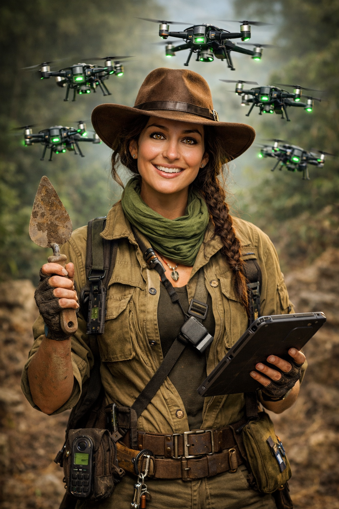
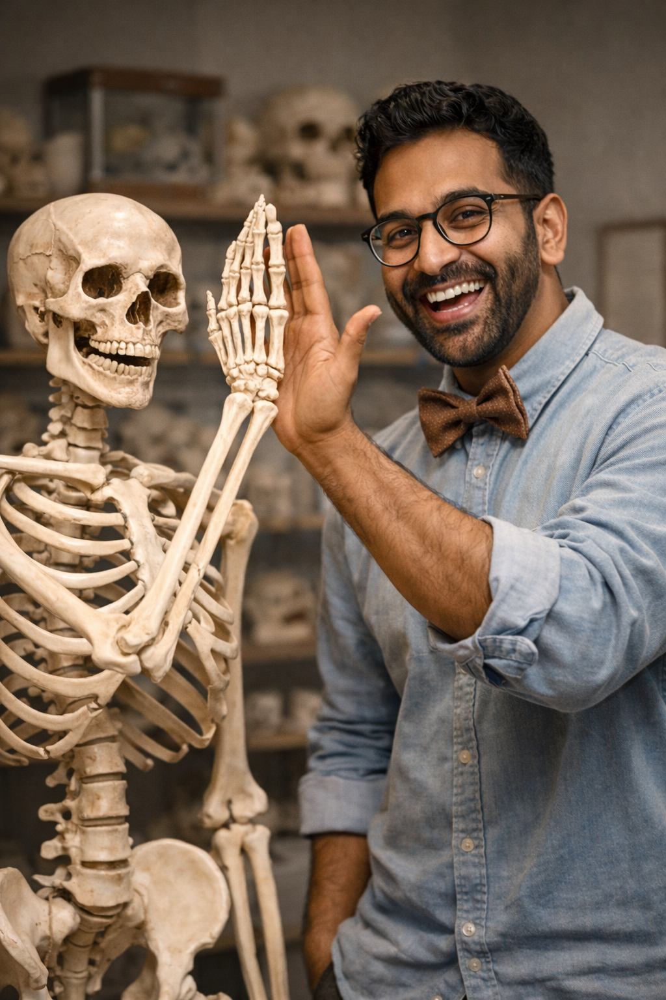

Dr. Isla Raman
Expertise: Archaeology - Digital Stratigrapher
Hi! I'm Isla. I got my PhD at Oxford University where I studied old tools found in mountains. I'm really good at using LiDAR drones to find hidden cities under the ground. My job involves a lot of digging and taking 3D pictures of what we find. People say I'm a bit of a nerd because I'm very meticulous with my notes. Right now, I am the Lead Field Archaeologist here at the museum. One time, I found a really cool ancient jar when I was 12, and that's why I love history so much!

Dr. Raj Malik
Expertise: Physical Anthropologist
This is Raj, our bone expert! He studied at the University of Chicago and knows everything about burial customs. He uses cool 3D tech to look at bone patterns from a long time ago. Raj is very intuitive and can almost "feel" the stories of the people he studies. He is currently working on our new exhibit about how ancient people moved across the world. He's received a few big grants for his work, which is awesome. He really believes that every single bone has a very important story to tell us.

Dr. Francine Bowman
Expertise: Cultural Historian & Storyweaver
Meet Francine, she is our amazing interpreter. She loves looking at old myths and trying to find the "hidden" meaning in objects. She's great at working with artists to make our museum displays look really cool and interesting. Francine has a unique background and she always asks "why" instead of just "what." She is the person who turns our messy field data into great stories for you to read. Sometimes she even disagrees with the other scientists because she has very bold ideas! She wants everyone to feel connected to the people of the past.